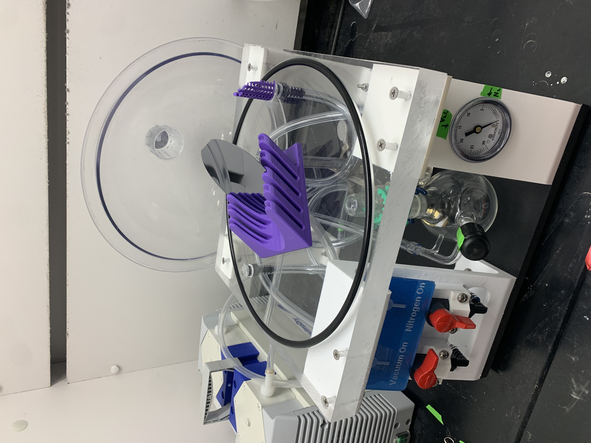
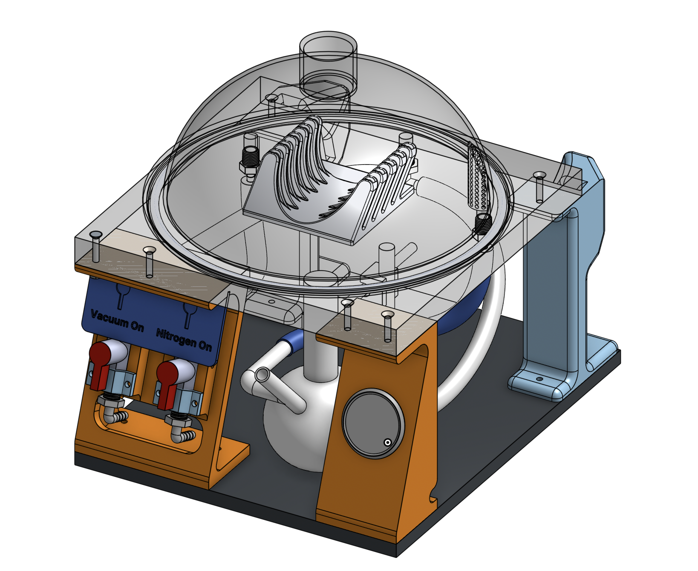

Silane Chamber
One of the main functions of the μFluidics workshop is to facilitate researchers making microfluidic devices. Some researchers are interested in making their silicon wafers hydrophobic and that process involves the gas-phase deposition of silane onto the wafer, which makes it hydrophobic.
The old Silane Vapor Deposition rig used stainless steel valves and components, which under constant exposure to the silane had rusted and began to bind. This big issue and a couple of other ergonomic shortcomings demanded a new improved version.
The design requirements for this new version were to have all components be rated to not degrade under constant silane exposure, make the operation of the rig easier and more straight forward for the user, and have the silane level be easily visible.
Following these requirements and an intial sketch I designed a new rig that can be seen on the right. It features a much smaller footprint and very straight forward operation.